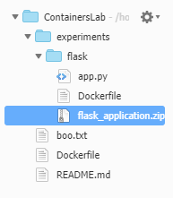

[*version_1.0.0]
©2019 Amazon Web Services, Inc. and its affiliates. All rights reserved. This work may not be reproduced or redistributed, in whole or in part, without prior written permission from Amazon Web Services, Inc. Commercial copying, lending, or selling is prohibited.After completing this exercise, you will know the basics of the Docker Commands and will have had experience in using the Cloud9 terminal to work with containers.
You will also have learned how to deploy a very simple application live to the AWS cloud using AWS Elastic Beanstalk.
You are a cloud specialist and have been brought in as a consultant for a small solar power company to help their engineers learn how to set up any of their future internal microservice based applications on the AWS cloud.
You will start by exploring multiple options for deploying different sized applications. Starting from the basics like a simple web app to an API with Elastic Beanstalk. Then progressing on to more advanced topics such as using volumes, and finally how to work directly with ECS.
You decide the best way to help their engineers learn this stuff is to break the project into 4 parts (i.e your 4 labs).
Your goal is not to build a production ready dev ops system for them, but to educate their engineers on their options and practical uses for working with containers. Another objective is to have them evaluate which technology or managed services would be suitable for all future container related projects. You know they have APIs for working with service-area information and pricing. You also have been told they use flask for most of their internal web applications. So you will try to keep the learning in-line with that.
Ok, with your teacher hat on. Lets look look at how you are going to approach lab 1.
You figure that the best way to teach Docker to their engineers, who are familiar with the command line and server configuration, is to simply jump in and demo the use of Docker commands.
Once they are familiar with Docker commands and how it all works. You will show them how to deploy a basic application. It makes sense to use the worlds simplest flask web app as that is something they work with day to day.
As you demo you are going to take some time to recap the benefits of using Docker so they are "sold on the idea" before going into more complex scenarios (your future labs).
You will go through the following step as part of your demo:
OK, teacher...best of luck!
💁♂ One last thing! If you see this symbol 💁♂ It is me (Rick) talking to you and offering my 2 cents here and there. If you ever see the 📓 icon it's usually me highlighting something more interesting or notable.
A Start Lab panel opens displaying the lab status.
This will open the AWS Management Console in a new browser tab. The system will automatically log you in.
TIP: If a new browser tab does not open, there will typically be a banner or icon at the top of your browser indicating that your browser is preventing the site from opening pop-up windows. Click on the banner or icon and choose "Allow pop ups."
Arrange the AWS Management Console tab so that it displays along side these instructions. Ideally, you will be able to see both browser tabs at the same time, to make it easier to follow the lab steps.
Before you can start this exercise. You need to import some files and install some modules in the AWS Cloud9 environment that has been prepared for you.
Ensure you are in Cloud9. Choose Services and search for Cloud9. You should see an existing IDE called ContainersLab. Click the button Open IDE. Once the IDE has loaded, enter the following command into the terminal: (This command will ensure that you are in the correct path)
cd /home/ec2-user/environmentYou will need get the files that will be used for this exercise. Go to the Cloud9 bash terminal (at the bottom of the page) and run the following wget command:
xxxxxxxxxxwget https://aws-tc-largeobjects.s3.us-west-2.amazonaws.com/DEV-AWS-MO-Containers/lab-1-docker-cli.zipYou should also see that a root folder called ContainersLab with a lab-1-docker-cli.zip file has been downloaded and added to your AWS Cloud9 filesystem (on the top left).
To unzip the file. Run the following command:
xxxxxxxxxxunzip lab-1-docker-cli.zipTo keep things clean. Run the following commands to remove the zip file. You can also close the other AWS console tab.
xxxxxxxxxxrm lab-1-docker-cli.zipSo you are in a conference room in front of a team of eight engineers. They are all on time and not on Facebook (this is make believe remember). They are actually leaning forward and eager to learn how to use Docker.
You laptop is all set up and the projector is nice and warm (as is your coffee).
Off you go....may the demo gods be with you. 🤞
Docker is installed on your Cloud9 instance. So you can just start showing these commands.
You start by showing them what commands Docker is capable of running.
You type the following in the Cloud9 Terminal:
xxxxxxxxxxdocker helpYou should see the following:
xUsage: docker [OPTIONS] COMMANDA self-sufficient runtime for containersOptions: --config string Location of client config files (default "/home/ec2-user/.docker") -D, --debug Enable debug mode -H, --host list Daemon socket(s) to connect to -l, --log-level string Set the logging level ("debug"|"info"|"warn"|"error"|"fatal") (default "info") --tls Use TLS; implied by --tlsverify --tlscacert string Trust certs signed only by this CA (default "/home/ec2-user/.docker/ca.pem") --tlscert string Path to TLS certificate file (default "/home/ec2-user/.docker/cert.pem") --tlskey string Path to TLS key file (default "/home/ec2-user/.docker/key.pem") --tlsverify Use TLS and verify the remote -v, --version Print version information and quitManagement Commands: config Manage Docker configs container Manage containers image Manage images network Manage networks node Manage Swarm nodes plugin Manage plugins secret Manage Docker secrets service Manage services stack Manage Docker stacks swarm Manage Swarm system Manage Docker trust Manage trust on Docker images volume Manage volumesCommands: attach Attach local standard input, output, and error streams to a running container build Build an image from a Dockerfile commit Create a new image from a container's changes cp Copy files/folders between a container and the local filesystem create Create a new container diff Inspect changes to files or directories on a container's filesystem events Get real time events from the server exec Run a command in a running container export Export a container's filesystem as a tar archive history Show the history of an image images List images import Import the contents from a tarball to create a filesystem image info Display system-wide information inspect Return low-level information on Docker objects kill Kill one or more running containers load Load an image from a tar archive or STDIN login Log in to a Docker registry logout Log out from a Docker registry logs Fetch the logs of a container pause Pause all processes within one or more containers port List port mappings or a specific mapping for the container ps List containers pull Pull an image or a repository from a registry push Push an image or a repository to a registry rename Rename a container restart Restart one or more containers rm Remove one or more containers rmi Remove one or more images run Run a command in a new container save Save one or more images to a tar archive (streamed to STDOUT by default) search Search the Docker Hub for images start Start one or more stopped containers stats Display a live stream of container(s) resource usage statistics stop Stop one or more running containers tag Create a tag TARGET_IMAGE that refers to SOURCE_IMAGE top Display the running processes of a container unpause Unpause all processes within one or more containers update Update configuration of one or more containers version Show the Docker version information wait Block until one or more containers stop, then print their exit codesRun 'docker COMMAND --help' for more information on a command.You advise your students that they can take this a step further and expand on a particular Management Command. For example if they wanted to know more about what the config Management Command does they can simply run the following:
You show them the result of this command:
xxxxxxxxxxdocker config helpYou should see a bit more granular information about that particular command:
xxxxxxxxxxUsage: docker config COMMANDManage Docker configsCommands: create Create a config from a file or STDIN inspect Display detailed information on one or more configs ls List configs rm Remove one or more configsRun 'docker config COMMAND --help' for more information on a command.You show them that they can also extrapolate more information from any child commands and see what options they can pass.
Run the following:
xxxxxxxxxxdocker config create --helpWhich results in:
xxxxxxxxxxUsage: docker config create [OPTIONS] CONFIG file|-Create a config from a file or STDINOptions: -l, --label list Config labels --template-driver string Template driverLet's take one of the commands that was revealed in the docker help command called attach.
You want to show them that in order to find out specific information about the options that can be passed. You run the help flag on the command.
Flag for help on the attach command .
xxxxxxxxxxdocker attach --helpYou will see the following:
xxxxxxxxxxUsage: docker attach [OPTIONS] CONTAINERAttach local standard input, output, and error streams to a running containerOptions: --detach-keys string Override the key sequence for detaching a container --no-stdin Do not attach STDIN --sig-proxy Proxy all received signals to the process (default true)We can see why we have to use -- in front of the word help because if you didn't docker would think that the word help was a container. Remember it wants this format: docker attach [OPTIONS] CONTAINER
Show the students this command to trigger an error because the word help will be thought of as a CONTAINER.
xxxxxxxxxxdocker attach helpYou should see:
xxxxxxxxxxError: No such container: helpSo now you have explained and demoed the basic use of the Docker CLI. You can now discuss the more important commands. You don't feel it is necessary to cover every single docker command. Generally you will find yourself only using a handful of them over and over again.
You mentally shortlist some commands that you want to demo and start with info.
info Commandinfo according to the 'help' will display system-wide information.
Demo this command:
xxxxxxxxxxdocker infoYou should be able to show them something like this:
💁♂ Take a moment to read through this output the items in it will make more sense to you as you run through the lab.
xxxxxxxxxxContainers: 0 Running: 0 Paused: 0 Stopped: 0Images: 5Server Version: 18.06.1-ceStorage Driver: overlay2 Backing Filesystem: extfs Supports d_type: true Native Overlay Diff: trueLogging Driver: json-fileCgroup Driver: cgroupfsPlugins: Volume: local Network: bridge host macvlan null overlay Log: awslogs fluentd gcplogs gelf journald json-file logentries splunk syslogSwarm: inactiveRuntimes: runcDefault Runtime: runcInit Binary: docker-initcontainerd version: 468a545b9edcd5932818eb9de8e72413e616e86erunc version: 69663f0bd4b60df09991c08812a60108003fa340init version: fec3683Security Options: seccomp Profile: defaultKernel Version: 4.14.146-93.123.amzn1.x86_64Operating System: Amazon Linux AMI 2018.03OSType: linuxArchitecture: x86_64CPUs: 1Total Memory: 985.8MiBName: ip-10-16-10-162ID: MMPJ:S4CK:4TCT:K6NF:NVS7:B5ZT:JEJ4:XLGS:TR4D:J3VC:NLPC:OSFNDocker Root Dir: /var/lib/dockerDebug Mode (client): falseDebug Mode (server): falseRegistry: https://index.docker.io/v1/Labels:Experimental: falseInsecure Registries: 127.0.0.0/8Live Restore Enabled: falseYou explain to your students that you don't have any containers running. Hence the "0 containers". However you do show that you have 5 images. So you decide to list the images and show them to your students. One of your students preemptively tried docker list and docker ls and the commands were not found.
images commandYou take this opportunity to show them the docker --help again. So that they can see the commands that they have to work. 💁♂ If they ain't listed here they don't exist.
xxxxxxxxxxdocker --helpSo you point at docker images and run that.
xxxxxxxxxxdocker imagesThis shows the docker images that are on this machine.
xxxxxxxxxxREPOSITORY TAG IMAGE ID CREATED SIZElambci/lambda python3.6 2659a569a6df 11 days ago 866MBlambci/lambda python2.7 cb4434915937 11 days ago 736MBlambci/lambda nodejs8.10 4b48734d829e 11 days ago 794MBlambci/lambda nodejs6.10 66658f1f8ea0 11 days ago 771MBlambci/lambda nodejs4.3 8f0f08111764 11 days ago 756MBYou run --help
xxxxxxxxxxdocker images --help Where you show them the --no-trunc flag:
xxxxxxxxxxUsage: docker images [OPTIONS] [REPOSITORY[:TAG]]List imagesOptions: -a, --all Show all images (default hides intermediate images) --digests Show digests -f, --filter filter Filter output based on conditions provided --format string Pretty-print images using a Go template --no-trunc Don't truncate output -q, --quiet Only show numeric IDsList the machine's docker images again without truncating the output:
xxxxxxxxxxdocker images --no-truncYou should get this:
xxxxxxxxxxREPOSITORY TAG IMAGE ID CREATED SIZElambci/lambda python3.6 sha256:2659a569a6df6ea638363d937fd235dbeb61730b2a9070434ca94f308491b6dc 11 days ago 866MBlambci/lambda python2.7 sha256:cb4434915937f3133f8b205c2d561fc018dbf60fcec5c9da84219f401900be72 11 days ago 736MBlambci/lambda nodejs8.10 sha256:4b48734d829e434f821b27daf24f7ec972af83100d8b5916332979c25b981b29 11 days ago 794MBlambci/lambda nodejs6.10 sha256:66658f1f8ea08c593ee4f729e2e54ec41eaa2269ccad77a987bd64ee234b2139 11 days ago 771MBlambci/lambda nodejs4.3 sha256:8f0f0811176461ae0ea769f0cf747c0aa3feb9ffcf486ed30adafa0eafc13a86 11 days ago 756MBThis is now exposing the full expanded ImageID of each image.
You explain to your students what Images are and everyone seems to follow along.
💁♂ Reference this courses' video with Seph if you need a refresher on Docker terminology. As we are not re-capping the video content in this lab.
Next you think it would be useful to your students to show them how to run an image and essentially create a new container from it.
The images you see in the Cloud9 environment are specific to working with Cloud9. So you don't want to demo one of those 5. Instead you decide the best way to explain the run command is to first create a new image from scratch.
You walk them through these very simple steps to create and then run a docker image.
Choose File and New File.
At the top paste the following into the file:
xxxxxxxxxxFROM alpineCOPY boo.txt /boo_inside_my_container.txtChoose File then Save As. Name it Dockerfile. Then choose Save. It should now show up on the left under directly under the ContainersLab folder which is what we want.
We will now create a second .txt filed called boo.txt. Choose File then New File. Paste the following into the file:
xxxxxxxxxxBOO!Choose File and Save As. Name the file boo.txt. Choose Save. This file will also now show up directly under the ContainersLab folder.
You explain to your students that when this is built and subsequently run. An alpine container with a folder that has a text file called boo_inside_my_container.txt containing the contents of the boo.txt file you just created.
build commandNow that you have a Dockerfile to work with you need to demo a build.
You decide to tag this image scare_me so its easy to find later, and you get to explain why tags are useful. Run the following from the bash terminal in Cloud9:
xxxxxxxxxxdocker build --tag scare_me .💁♂ Note the period . above, meaning this current directory, i.e /ContainersLab.
You demo this and this is what your students will see:
xxxxxxxxxxSending build context to Docker daemon 12.29kBStep 1/2 : FROM alpinelatest: Pulling from library/alpine9d48c3bd43c5: Pull complete Digest: sha256:72c42ed48c3a2db31b7dafe17d275b634664a708d901ec9fd57b1529280f01fbStatus: Downloaded newer image for alpine:latest ---> 961769676411Step 2/2 : COPY boo.txt /boo_inside_my_container.txt ---> a4a5e357e6d4Successfully built a4a5e357e6d4Successfully tagged scare_me:latestUsing that output on your screen. You explain that docker is going though two steps as you have two commands in your Dockerfile, and you explain the following to them:
First you are not creating the image from scratch. You are starting from an alpine Linux distro.
If you literally build an image from scratch it will not have any way to issue commands. You would need to flush out the Dockerfile. So for now you tell them to keep it running alpine.
The second command is telling it to copy that boo.txt file you created in Cloud9, and copy it into a brand new file called /boo_inside_my_container.txt on the new container.
You tell them it's time to view this image amongst the other known five images on this machine.
You ask them to see if they can remember the command for listing your machine's docker images.
Only four of them seem to remember, which you think isn't bad for this time in the morning when coffee hasn't clicked in yet. So you remind them by running it again:
xxxxxxxxxxdocker imagesThey should see something like this on your screen:
xxxxxxxxxxREPOSITORY TAG IMAGE ID CREATED SIZEscare_me latest a4a5e357e6d4 2 minutes ago 5.58MBlambci/lambda python3.6 2659a569a6df 12 days ago 866MBlambci/lambda python2.7 cb4434915937 12 days ago 736MBlambci/lambda nodejs8.10 4b48734d829e 12 days ago 794MBlambci/lambda nodejs6.10 66658f1f8ea0 12 days ago 771MBlambci/lambda nodejs4.3 8f0f08111764 12 days ago 756MBalpine latest 961769676411 7 weeks ago 5.58MB Cool, you are able to show them your shiny scary new image.
📓 Note that you now have an image called alpine too. This is useful because anytime you create a new image from alpine it is already there. It's already there as a read-only layer on your machine and you won't need to import it again. It will help other images build faster as it can be shared.
Now time to demo running it.
run commandIssue the run command passing the scare_me image name:
xxxxxxxxxxdocker run -ti scare_me bin/sh The flag -ti just allows you to run the container with an interactive prompt (i.e so you can do stuff on the command line in the container). Normally you wouldn't do that if you are deploying. However it's a great way to show your students how to not only run but interact with that "soon to be running" container.
You should see this and be able to issues commands inside the container.
xxxxxxxxxx/ #Try and list the folders and files on the container:
xxxxxxxxxxlsTo get this:
xxxxxxxxxxbin etc media proc sbin tmpboo_inside_my_container.txt home mnt root srv usrdev lib opt run sys varThen prove your file got moved over to this container.
xxxxxxxxxxcat boo_inside_my_container.txtYou should be able to see this:
xxxxxxxxxxBOO!/ #Awesome you were able to demo a few Docker commands. Build a docker image and run it interactively.
Your students seem genuinely surprised that it's not really that hard to build and launch a running container.
Exit the container with exit like so:
xxxxxxxxxxBOO!/ # exit voclabs:~/environment $ Next you want to demo running a simple app inside a container. This is where you will be able to explain some other Docker commands like ps and attach.
💁♂ For this we will create a very simple Python flask app. I have provided the code for you which resides in the experiments folder. Feel free to look at the app.py file as well as the Dockerfile. You can also get a better understanding of how the program will work by visiting the following link: https://docs.aws.amazon.com/elasticbeanstalk/latest/dg/create-deploy-python-flask.html. As this is what we will be using for this lab.
OK, so now your students are sold on the idea that it is easy to use. You are going to blow their mind how easy it is to get a working app up!
You ask them if any of them know Flask. They all look up from checking email and nod. OK, this should run smoothly 🤞.
You show them that they need to build a Docker image. So you make sure you are in the correct directory.
xxxxxxxxxxcd ~/environment/experiments/flaskYou spend a moment showing them the flask code. That way they won't think it's all magic trickery and that you are hiding stuff under your sleeve.
Once you have done that (💁♂ Just double click on the code file in Cloud 9 to open it BTW). You can build it with the Docker CLI.
Firstly quickly walk them through what is happening in the Dockerfile that is in that folder. 💁♂ Just do a quick scan. It should make sense to you.
Then you demo building there image:
xxxxxxxxxxdocker build --tag flask-tutorial .You should see something similar to this:
xxxxxxxxxxSending build context to Docker daemon 11.26kBStep 1/6 : FROM python:3.6 ---> a2e9f0fba405Step 2/6 : COPY . /appdir ---> bd94dde38e8fStep 3/6 : WORKDIR /appdir ---> Running in c373bd16bf67Removing intermediate container c373bd16bf67 ---> d37b8d6f6b79Step 4/6 : RUN pip install Flask==1.0.2 ---> Running in 976eb50957d3Collecting Flask==1.0.2 Downloading https://files.pythonhosted.org/packages/7f/e7/08578774ed4536d3242b14dacb4696386634607af824ea997202cd0edb4b/Flask-1.0.2-py2.py3-none-any.whl (91kB)Collecting itsdangerous>=0.24 Downloading https://files.pythonhosted.org/packages/76/ae/44b03b253d6fade317f32c24d100b3b35c2239807046a4c953c7b89fa49e/itsdangerous-1.1.0-py2.py3-none-any.whlCollecting Jinja2>=2.10 Downloading https://files.pythonhosted.org/packages/65/e0/eb35e762802015cab1ccee04e8a277b03f1d8e53da3ec3106882ec42558b/Jinja2-2.10.3-py2.py3-none-any.whl (125kB)Collecting click>=5.1 Downloading https://files.pythonhosted.org/packages/fa/37/45185cb5abbc30d7257104c434fe0b07e5a195a6847506c074527aa599ec/Click-7.0-py2.py3-none-any.whl (81kB)Collecting Werkzeug>=0.14 Downloading https://files.pythonhosted.org/packages/ce/42/3aeda98f96e85fd26180534d36570e4d18108d62ae36f87694b476b83d6f/Werkzeug-0.16.0-py2.py3-none-any.whl (327kB)Collecting MarkupSafe>=0.23 Downloading https://files.pythonhosted.org/packages/b2/5f/23e0023be6bb885d00ffbefad2942bc51a620328ee910f64abe5a8d18dd1/MarkupSafe-1.1.1-cp36-cp36m-manylinux1_x86_64.whlInstalling collected packages: itsdangerous, MarkupSafe, Jinja2, click, Werkzeug, FlaskSuccessfully installed Flask-1.0.2 Jinja2-2.10.3 MarkupSafe-1.1.1 Werkzeug-0.16.0 click-7.0 itsdangerous-1.1.0Removing intermediate container 976eb50957d3 ---> 3358f91aa325Step 5/6 : EXPOSE 5000 ---> Running in 99cffc8dd784Removing intermediate container 99cffc8dd784 ---> 9c69abb48a54Step 6/6 : CMD ["python", "app.py"] ---> Running in 344b96fbb85dRemoving intermediate container 344b96fbb85d ---> 5284277f7291Successfully built 5284277f7291Successfully tagged flask-tutorial:latestNow verify it shows up as an image.
You ask them what is the command for listing images again. This time (post coffee) they all confidently tell you that it is docker images. Except you could swear that one of your students mid breath self-corrected from docker image.
xxxxxxxxxxdocker imagesYou should see the following:
xxxxxxxxxxREPOSITORY TAG IMAGE ID CREATED SIZEflask-tutorial latest 5284277f7291 2 minutes ago 923MBpython 3.6 a2e9f0fba405 6 days ago 913MBlambci/lambda python3.6 2659a569a6df 3 weeks ago 866MBlambci/lambda python2.7 cb4434915937 3 weeks ago 736MBlambci/lambda nodejs8.10 4b48734d829e 3 weeks ago 794MBlambci/lambda nodejs6.10 66658f1f8ea0 3 weeks ago 771MBlambci/lambda nodejs4.3 8f0f08111764 3 weeks ago 756MBnode 11-alpine f18da2f58c3d 4 months ago 75.5MBNow let's run the following:
xxxxxxxxxxdocker run -d --name flask-tutorial -p 5000:5000 flask-tutorialYou point out that you are using the -d flag to throw this into the background and not hold your terminal hostage. You discuss the port mapping stuff, and why you are naming it using the --name flag. 💁♂ Check the docker run docs if you are not familiar with or need a recap of these flags.
You then verify to them that it's running using the following command:
xxxxxxxxxxdocker psYou should see the following:
xxxxxxxxxxCONTAINER ID IMAGE COMMAND CREATED STATUS PORTS NAMESb0cd9af210e4 flask-tutorial "python app.py" About a minute ago Up About a minute 0.0.0.0:5000->5000/tcp flask-tutorialTest it. 💁♂ If you investigated the code you should have seen a section which asks us to append a username to the URL. So you use the following, swapping out the <FMI> (fill me in) with your name:
xxxxxxxxxxcurl http://localhost:5000/<FMI>Here is an example:
xxxxxxxxxxcurl http://localhost:5000/ArchimedesYou should see something similar to the following:
xxxxxxxxxx<html><head> <title>EB Flask Test</title> </head> <body> <p>Hello Archimedes!</p> <p><a href="/">Back</a></p></body>You tell them that this is exactly what they should expect, and it they prefer they can open it in the browser. The curl command is giving the raw output and not the fully rendered HTML that a browser would give them.
With docker ps you can show both running and stopped containers. By default it will show only running containers but by using the -a flag you can also see containers that are stopped.
ps commandTo re-iterate with the ps command you can list the docker containers. Some of the more common flags are --no-trunc which will not truncate the output. Another useful flag to keep in mind is -a which will allow us to see all the containers running and stopped (which we mentioned above). The --filter command is also helpful when searching for specific commands. So if we had our running flask-tutorial container we could run the following to filter it out:
xxxxxxxxxxdocker ps --filter "name=flask-tutorial"exec commandEven though we don't use the exec command it's important to note. The exec command will allow us to run a command in a running container. So for example if we have our running flask-tutorial container and we wanted to run a command inside it. The following command will create a new file test located in the /tmp directory, in the background:
xxxxxxxxxxdocker exec -d flask-tutorial touch /tmp/teststop commandYou show them how to stop our container by it's name (hence the use the --name flag earlier).
xxxxxxxxxxdocker stop flask-tutorialVerify it's stopped:
xxxxxxxxxxdocker psYou should see the following:
xxxxxxxxxx CONTAINER ID IMAGE COMMAND CREATED STATUS PORTS NAMESEverything is stopped and we can now think about how we can store our fancy new flask image.
Time to introduce to your students Amazon Elastic Container Registry.
You do your sales pitch on ECR and cover that it is a fully managed Docker container registry service. Which makes it easy to store, manage and deploy Docker container images. You tell them that it is integrated with Elastic Beanstalk and ECS (which you will cover later) which also simplifies the process when you deploy to production.
In order to be able to push our Docker image to ECR first we will use the CLI. You tell them that you will first need to authorize your Cloud9 docker client with the AWS CLI's ecr get-login command:
xxxxxxxxxxaws ecr get-login --region us-west-2 --no-include-emailYou should see something similar:
xxxxxxxxxxdocker login -u AWS -p eyJwYXlsb2FkIjoiWnc4NUs2K3dkNVhySXJvQWVlZE8xZUpHOVhaUmNaTEdYTXBrU2U0Y1BYb3NLTit4a1B3c3RteXhwWkNXcDZ0TkxLLzNpRjdZV2JvckxHczZIQmhsSGFwNlh6ZEU2K0tQOGRIRk8vNTl2enZpNDIybGpBTnlHdURHYjdYNHdZczU4TTZSaDVLbEVrUW80VFZDaXFRTzdkS0hnY0YyaTVlZ1c1RjYweVozZllSSHlWdVQvQngrQ2FQV1ZQVlJ1RndMa3RPOThaajBOd3grMDRJdURUQ2pFMzY5dFAxdzVhYjgzOEpjR0JUWFJWVCs3MG1TYUIwTXY3WWJIMCt4VE9ETDhWTEVzaHNuQTh2M1JQLzlUd2gyMFpnalcyRjNKTmpTd2l6dnptbVpDblh3dDZxa2lwNEowM0ZCLzZ5MEtBTHlFYkk3WmlqSFYzem5oSFJRTmVWMVdBR1FoSjdmV1RucHZwSDRqUGNCdndLZWI4aWpKSGs5L2VaUzFSbUlLZU1HS0UzU3FmRks0a2lYbEY2bkNLVEtRRnNLeGpCYnllVDdWbTJHaXJLMENOT0ZQVksrWS9jSlZ3SDJTaFc4VjBEYjdjeG9vK3pXQjFiYlAvNS9XQ0pXeUM2ZHMrM3dSMW1tdnUwdUVEV2U3b0lNdklpVDIrVHMrRTZ6cmxibVVObFhJaTYzUXdXNTJmRGVHZjFEeDFGOTJqU0dCL3hFd3ZYTzVweVZzMEZPYUcrV054cndlc3ZTL293TFJKcElrOHBtOVlwUVBxRzl4NGd2bnNrdFh3QlJOQkZJc0lkbDVDanQzVmxGWXdJaklOZXR4Zlo4M2tzUGNFekxVbW9kOEJtdVNCaGttMU9zeWZhY0RCa1J2QWs3UkVJL21vbXZBdFlYOW03T3A1VHo2V3ExZ3ZSanh5NkQrT2lWUWVHYVJLSlZGK3dpWEp4eWpDM2FwYTYzaTkyRXJ2V2lwd1p4cUQ4QlkzWG40cEtpQzRQUU9ZTGo2WTdMM3l4STVuZDQ1Zm9kL2I4aFBMREszeFlIbHRkMkhFWGJGOFkyd05qcXdld2FzYWw3bXRPTUJ5VzdKOWJJWW5ORm96SVY4TDQ1WitJYUNxN29QRDhrV3crK0lZSU91bit3WExnZ3lMNjFiM3FhRUs3dW04VjRRRWdNZTdtWVd4TnZta1JtWUc3aGFJUHJjTlh3aHZxRjNaQmNNOWVZNlljeENQdnVyYUlSY3BoYjJoWjQrdjFYbDVOL0hUS3UzajNRb1ZQVGtCYnFVNENTTXIyYURtd052LytHRUNxQ2tkSHpFQlE0TlZqcXZtR2dZaFVEcGpSZktIWGp0ajdlQ1hnSHhpb0ZSajdCdnFVZmdtQXlGVWxwZXQ0MklxeXVSSDlTMWpBYzk4VkE3aC9UcEgwd3phOWI3QmNRSnVIbFZVQTJkZDZkM2hvM2RMOU1pQkRtaTF4NHdHUGVTazRweG8zZUhkSWFIZXZlYjROcTdFeEV0OWZwZ3lvajlPRHJNcWw5dzNLbURidG4wVXNDVjJHWHlGalZMSkZITk5RWlFES1VGU2VZQVNUcFNzUFJROHVhR0hJNi9XUTNxUnh1Qk4xWnA0ZSt3cU1oWVV0ME9SNGxBNFFzZExlcVdzMFJqcVFpMDRWdE1yZkhDTVpZd1FGd2diek1xTGdzU29zSnZRSnJVQWEyOWJiZU5TL0xQaUliOTlLbUFjaVRHTE11cXRDZHhkMlBzV3ZCN1k3NU1Wc1NXU2ZBckl1WWh1cjZHSE1TQk9mNTdDbG9ZV0NQVlV2bzNVNnFHUEIwOVAwSUNEczc4ajNGY0x4K1QvSHJpaGNBTjZhZzUwaFdEV0I1TU9nT2dHRDdrRW5VTGxMSkRBRnp4c3l2Q252N2pwcFo5R2RlSTBINWtiR1hIZFRwQXJEZzZYeUlLYXVMQVFMczdWcUF4TUNwU3djdmluQXNDR0dWQ3M4MUtGUjZjQTA5bmVrYWgvUVpxQkhhdHA0QW1scGNDQlJSMGEvTFVRPT0iLCJkYXRha2V5IjoiQVFFQkFIajZsYzRYSUp3LzdsbjBIYzAwRE1lazZHRXhIQ2JZNFJJcFRNQ0k1OEluVXdBQUFINHdmQVlKS29aSWh2Y05BUWNHb0c4d2JRSUJBREJvQmdrcWhraUc5dzBCQndFd0hnWUpZSVpJQVdVREJBRXVNQkVFRERJWDFaUm1YUmR5QmZtM1VBSUJFSUE3UldmRHhZSW1zdDhOejdVM01KREpjMlRVbSszSE13RXIyMWUzZ0lEOWI1QnhPZXptNnhRL3JNTjRMejV6UGxnM3RhTFRUMzNlWEEwS3d6MD0iLCJ2ZXJzaW9uIjoiMiIsInR5cGUiOiJEQVRBX0tFWSIsImV4cGlyYXRpb24iOjE1NzIwNzgxMTV9 https://323009296932.dkr.ecr.us-west-2.amazonaws.comYou copy and paste the entire output from above. Paste it back in to the terminal and press enter. You should see the following. You can ignore the warnings:
xxxxxxxxxxWARNING! Using --password via the CLI is insecure. Use --password-stdin.WARNING! Your password will be stored unencrypted in /home/ec2-user/.docker/config.json.Configure a credential helper to remove this warning. Seehttps://docs.docker.com/engine/reference/commandline/login/#credentials-storeLogin SucceededBefore you can demo pushing your image. You need to create an ECR repository that you can push to.
xxxxxxxxxxaws ecr create-repository --repository-name flask-tutorialYou should see something similar to the output:
xxxxxxxxxx{ "repository": { "repositoryUri": "323009296932.dkr.ecr.us-west-2.amazonaws.com/flask-tutorial", "registryId": "323009296932", "imageTagMutability": "MUTABLE", "repositoryArn": "arn:aws:ecr:us-west-2:323009296932:repository/flask-tutorial", "repositoryName": "flask-tutorial", "createdAt": 1572035197.0 }}You explain to them that it's the repositoryUri that you would need to use if you ever have to reference your image in future deployments.
Re-run your Docker command to see your image:
xxxxxxxxxxdocker imagesThis will show something like this on your screen
xxxxxxxxxxREPOSITORY TAG IMAGE ID CREATED SIZEflask-tutorial latest 702435410f1c 9 minutes ago 923MBpython 3.6 a2e9f0fba405 6 days ago 913MBlambci/lambda python3.6 2659a569a6df 3 weeks ago 866MBlambci/lambda python2.7 cb4434915937 3 weeks ago 736MBlambci/lambda nodejs8.10 4b48734d829e 3 weeks ago 794MBlambci/lambda nodejs6.10 66658f1f8ea0 3 weeks ago 771MBlambci/lambda nodejs4.3 8f0f08111764 3 weeks ago 756MBtag commandYou tell them that you are going to re-tag your image to include your registryId. This makes it easier to manage if you have many accounts or work with other registry providers like docker hub etc.
You demo tagging your flask app as follows. Explaining that their ECR's repositoryUri will be different.
💁♂I.e swap out the <FMI> with yours to demo it.
xxxxxxxxxxdocker tag flask-tutorial:latest <FMI>.dkr.ecr.us-west-2.amazonaws.com/flask-tutorial:latest 💁♂ As an example:
xxxxxxxxxxdocker tag flask-tutorial:latest 323009296932.dkr.ecr.us-west-2.amazonaws.com/flask-tutorial:latest Re-run the docker images command:
xxxxxxxxxxdocker imagesNow your students will see something similar to this on your screen:
xxxxxxxxxx REPOSITORY TAG IMAGE ID CREATED SIZE 323009296932.dkr.ecr.us-west-2.amazonaws.com/flask-tutorial latest 702435410f1c 12 minutes ago 923MB flask-tutorial latest 702435410f1c 12 minutes ago 923MB python 3.6 a2e9f0fba405 6 days ago 913MB lambci/lambda python3.6 2659a569a6df 3 weeks ago 866MB lambci/lambda python2.7 cb4434915937 3 weeks ago 736MB lambci/lambda nodejs8.10 4b48734d829e 3 weeks ago 794MB lambci/lambda nodejs6.10 66658f1f8ea0 3 weeks ago 771MB lambci/lambda nodejs4.3 8f0f08111764 3 weeks ago 756MBpush commandNow you can easily show them the push command and leverage a real ECR repo at the same time.
💁♂Swap your <FMI>
xxxxxxxxxxdocker push <FMI>.dkr.ecr.us-west-2.amazonaws.com/flask-tutorial:latest💁♂ As an example:
xxxxxxxxxxdocker push 323009296932.dkr.ecr.us-west-2.amazonaws.com/flask-tutorial:latestOnce you do this you should see something similar to the following:
xxxxxxxxxxThe push refers to repository [323009296932.dkr.ecr.us-west-2.amazonaws.com/flask-tutorial]ff4ff4b2b471: Pushed cd1f247135f6: Pushed dcea7e243648: Pushed d431d6bc3307: Pushed ff19fb54200e: Pushed 69168fb9b7b0: Pushed 31f78d833a92: Pushed 2ea751c0f96c: Pushed 7a435d49206f: Pushed 9674e3075904: Pushed 831b66a484dc: Pushed latest: digest: sha256:8e9ab6d360fb225cde3d5f4adad29c4d0bee5097a951d32aa15ccbe8560200d2 size: 2636You can now show them that the flask image is now stored in ECR. Using the aws ecr list-images command:
xxxxxxxxxxaws ecr list-images --repository-name flask-tutorialYou can now show them something similar to this on your screen:
xxxxxxxxxx{ "imageIds": [ { "imageTag": "latest", "imageDigest": "sha256:8e9ab6d360fb225cde3d5f4adad29c4d0bee5097a951d32aa15ccbe8560200d2" } ]}So you think up to this point your students have been following along. They understand the main docker commands like: build, run, stop, ps and push. They know their way around a dockerfile and can launch and test it locally.
You feel it is going well, based on the lack of email checking and Facebook surfing that is going on in class.
So in order to finish off your session you think it would be cool if you can demo a live deployment.
For this you tell them that you are going to leverage Elastic Beanstalk. You want to show them how easy it is to get your flask app up and running in the cloud.
You demo how to deploy the Flask application to Elastic Beanstalk.
Although they understand ECR you think it might be worth demoing this deployment with one of Elastic Beanstalks super simple deployment options called a ZIP deployment via the AWS console. This removes the need to get involved with all those ECR steps above, and is a nice way to visually introduce them to Elastic Beanstalk.
First you need to show them how to zip up the entire Flask application.
Zip up the application, but first change to the following directory in your Cloud9 terminal. Make sure you are in the right place.
xxxxxxxxxxcd ~/environment/experiments/flask/Demo zipping the files by running the following command:
xxxxxxxxxxzip flask_application.zip app.py DockerfileYou should be able to show them the following:
xxxxxxxxxxadding: app.py (deflated 49%)adding: Dockerfile (deflated 9%)On the left panel expand the flask folder and right click on the flask_application.zip and choose Download

Choose AWS Cloud9 and choose Go To Your Dashboard. Choose Services and choose Elastic Beanstalk from Compute.
At the top right choose Create New Application.
Name it flask-app. Choose Create.
Choose Actions and Create environment.
Leave the Web server environment tab selected. Choose Select.
You tell them that they can leave the Environment name as FlaskApp-env. For Platform you need to choose Docker from the drop-down list.
For Application code choose Upload your code. Choose Upload and leave Local file selected. Choose Choose File and browse to where the flask_application.zip was downloaded.
Choose Upload. Choose Create environment.
Eventually you should see the Health go to Ok with a green circle and a check mark to indicate everything is healthy.
Choose Elastic Beanstalk at the top left. You should see your application in a green box with the URL. Click that and at the top you should see the Environment ID and URL. Copy the URL.
Choose the URL (which should open in a new browser tab) and you should see your example Flask Application:
xxxxxxxxxxHello World!Hint: This is a RESTful web service! Append a username to the URL (for example: /Thelonious) to say hello to someone specific.You can now append a name to the end of the URL. For example:
xxxxxxxxxxhttp://flaskapp-env-1.2mebji6g9b.us-west-2.elasticbeanstalk.com/steeleYou should see the name back like this:
xxxxxxxxxxHello steele!BackYour students are really impressed how easy it looks to deploy live via Beanstalk.
They are curious to what Beanstalk actually created for you, as they are asking questions like:
Did this create an EC2 and a VPC for me?
What about security groups, did this open port 80 automatically for us?
Is this load balanced (HA) or not?
You spend a few moments (to wrap up your session) by poking around in the AWS console at the security groups, subnets and EC2 pages. You want to answer their questions by "showing them" what it did and didn't create magically.
💁♂ As you have finished this lab. Poke around and see what it created. You will see that Beanstalk did a lot, so that you don't have to!
Now that you have answered all their questions. They seem very happy with what you have shown them so far. They are all really keen to know more, and are asking you to expand upon beanstalks defaults. They also want to know if you can show it working with more custom configurations.
Looks like you have set them up perfectly for lab 2 ;)
Congratulations! You have completed the lab.
For feedback, suggestions, or corrections, please email us at: aws-course-feedback@amazon.com